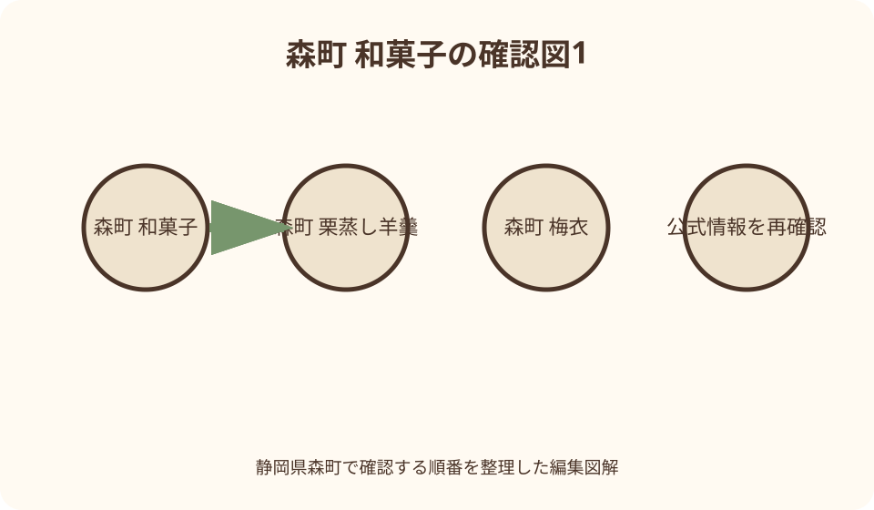
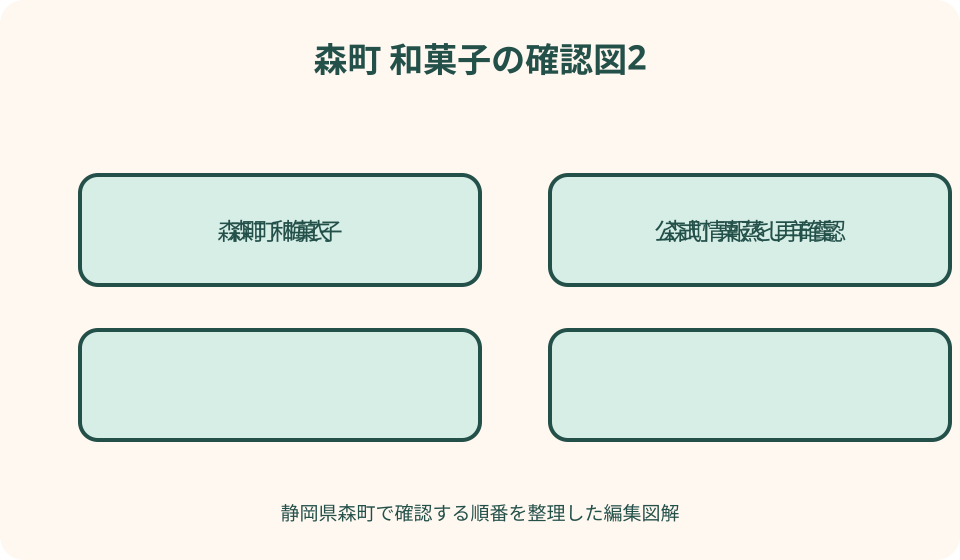

和菓子・町歩き｜最終確認 2026-08-10
静岡県森町の和菓子めぐり｜栗蒸し羊羹・梅衣・季節菓子を買う順番
森町の和菓子めぐりは、欲しい菓子を一種類決め、受取日、必要数、渡す日、持ち歩き時間を店へ伝えて予約可否を確認するところから始めます。栗蒸し羊羹は各店で掲載された販売時期が異なり、梅衣も複数店が扱うため、同名なら在庫や期限が同じとは限りません。徒歩なら町なかの二店までに絞り、期限の短い品を最後に受け取ると、町並み散策と買い物を両立できます。

編集イラスト最初に決める——店の数より、受取日と渡す日を固定する
静岡県森町で和菓子を買う日は、最初に誰へ何日に渡すかを書きます。自宅で当日食べる分、翌日に家族へ渡す分、数日後に職場へ配る分では、選べる保存条件と期限が違います。店名を並べる前に、受取日から渡す日までの時間を確定します。
次に必要数を一個単位で数え、予備を何個まで持つか決めます。箱単位だけで考えると、個包装の有無や一箱の入数が希望と合わない場合があります。販売者へ人数、用途、持ち歩き時間を伝え、当日の包装と期限で必要数を調整します。
訪問先は徒歩なら二店、車でも三店程度に絞ります。森町観光協会は福むら、栄正堂、月花園、村登屋などを掲載していますが、全店の商品を同日に集めることが目的ではありません。第一候補の菓子と、売り切れ時に条件を守れる代案を決めます。
価格、営業時間、販売期間は二〇二六年八月十日時点の公式掲載から変わり得ます。本記事では固定価格を比較せず、訪問前に各店へ最新情報を確認する前提で案内します。臨時休業や予約締切を確認できなければ、遠方から一品だけを目当てに向かいません。
森町の和菓子を分ける——同じ町の銘菓と季節品を一括りにしない
森町公式の「遠州の小京都」は、秋葉街道の歴史や町並み、茶などの地域産業を伝えています。観光協会は、茶の産地である森町に茶菓子へこだわる和菓子店が多いと紹介しています。この背景は店を訪ねる理由になりますが、個別商品の在庫保証ではありません。
梅衣は観光協会の複数店舗ページに掲載され、求肥、餡、紫蘇の葉を用いる森町の菓子として紹介されています。同じ名称でも各店の商品は別に作られているため、形、原材料、期限、包装、予約条件が共通だと考えず、購入する商品の表示を読みます。
栗蒸し羊羹は、福むら、月花園新町、村登屋の紹介に季節商品として登場します。ただし、掲載された販売時期や店の営業形態は異なります。「森町で秋なら必ず買える」とまとめず、その年の栗の状況、製造日、予約受付を各店へ確認します。
最中、みそまんじゅう、次郎柿を使う羊羹、茶を使う菓子など、町との関係を説明しやすい品もあります。名称だけで常温、日持ち、個包装を推測してはいけません。生菓子か焼菓子かという大分類より、手元の商品の食品表示を優先します。
栗蒸し羊羹を狙う——店ごとの季節と予約を別々に確認する
福むらの観光協会ページは、地元の和栗を使う栗むし羊羹を季節限定品として紹介しています。一方、月花園新町では森町産の新栗を使う新栗蒸し羊羹を九月初旬から十二月中旬頃とし、事前予約が確実だと案内しています。
村登屋の紹介では、栗が出回る十月初旬から十一月下旬頃に栗むし羊羹を販売すると記されていますが、和菓子の販売詳細は変動する旨もあります。三店の時期を平均して共通シーズンを作らず、訪問年の販売開始と終了を一店ずつ尋ねます。
予約するときは、商品名、棹または個数、受取日、時刻、氏名、連絡先を伝えます。一本の大きさ、切り分け数、包装、期限、支払方法も確認します。電話で「栗羊羹」とだけ言わず、店が案内する正式名称を復唱して取り違えを防ぎます。
売り切れた場合は、別店の栗蒸し羊羹が同じ仕様だと期待して急行しません。別店へ在庫を確認する、次の製造日に予約する、栗を使う別の表示済み商品へ替えるという順にします。販売時期外なら、通年候補の最中などへ目的を切り替えます。

梅衣を選ぶ——元祖の説明と各店の商品表示を分ける
栄正堂は観光協会から梅衣の元祖として紹介され、考案者の直弟子が始めた店という来歴が掲載されています。この歴史は訪問先を決める手掛かりですが、他店の梅衣を同じ製法や包装だとみなす根拠にはなりません。
福むら、月花園新町、大鳥居月花園にも梅衣の掲載があります。複数店で一個ずつ買う場合は、購入直後に店名が分かるよう袋を分け、原材料と期限を残します。味の順位を付ける目的ではなく、作り手ごとの表示を混同しないための整理です。
求肥や餡を使う菓子は、乾いた焼菓子と同じ持ち歩き方とは限りません。常温可否、直射日光を避ける必要、当日または翌日に渡せるかを購入時に確認します。紫蘇を使うことも伝え、相手の苦手な食材や原材料への配慮をします。
職場へ配る場合は、個包装か、手を汚さず配れるか、机に長時間置けるかを確認します。条件が合わなければ、梅衣を自宅用にして、職場用は個包装と期限を確認できる別商品にします。名物を全員へ同じ形で渡す必要はありません。
福むらへ行く——季節品と店内休憩を一つの予定に詰め込まない
森町観光協会は福むらを戦前から続く菓子店として紹介し、梅衣、みそまんじゅう、季節限定の栗むし羊羹などを掲載しています。店内の休憩スペースも案内されていますが、席や飲食利用を予約なしで保証するものではありません。
観光協会掲載の営業時間は九時から十九時、定休日は水曜日です。二〇二六年八月十日以後の臨時休業や売り切れは反映できないため、栗蒸し羊羹を目的にする日は電話で販売期間、予約、受取可能時刻を確認します。
休憩と持ち帰りを両方予定するなら、先に予約品の受取を店へ伝え、店内で食べられる品は当日の案内から選びます。持ち帰り用の箱を開けて試食せず、食べる分と渡す分を会計前に分けると、期限と個数を管理しやすくなります。
昔の森町の写真が展示されるという紹介を町歩きへ生かすなら、混雑時に店主へ長い説明を求めません。休憩スペースの利用可否を確認し、買い物客を優先します。菓子の受取と町の話を聞く時間を別々に考えることが大切です。
栄正堂へ行く——梅衣と石松最中を用途で分ける
栄正堂の公式観光紹介には梅衣と、森の石松の三度笠をかたどる石松最中が掲載されています。地域の物語を伝えたい贈答では候補になりますが、形だけで保存性を判断せず、購入日の期限と個包装の状態を確認します。
掲載された営業時間は八時から十八時、定休日は水曜日、駐車場は五台です。これらは二〇二六年八月十日時点の案内なので、来店日の営業と駐車方法を店へ確認します。満車時に路上で待たず、町営駐車場等の利用可否を観光案内で確かめます。
梅衣を自宅用、最中を配布用にする場合も、実際の商品が希望人数へ分けられるかを見ます。箱入りだけを想定せず、単品購入、箱の入数、のし、手提げ袋を注文時に尋ねます。必要数が多い場合は事前予約を相談します。
元祖という来歴を贈り先へ伝えるときは、観光協会が紹介する範囲に留めます。食べていない商品の甘さ、食感、好みを自分の体験として語らず、紫蘇の葉を使う梅衣、三度笠を表す最中という確認できる特徴を添えます。

月花園を選ぶ——新町と大鳥居の店舗情報を取り違えない
観光協会には月花園新町と大鳥居月花園が別ページで掲載されています。名称が似ていても所在地、営業時間、駐車、取扱商品を一つの店舗情報としてまとめません。地図を保存するときは、ページ名と住所を一緒に記録します。
月花園新町は梅衣、みそまんじゅう、乳菓、栗の菓子、茶を使う菓子などを扱う店として紹介されています。新栗蒸し羊羹は季節と予約の案内があるため、販売期間内でも当日購入を前提にせず、必要日から逆算して連絡します。
大鳥居月花園は、かりんとう饅頭が夕方に完売する日もあると観光協会が案内しています。販売時刻や数量を固定せず、目当てなら当日の取置き可否を確認します。揚げ菓子だから期限が長いと推測せず、商品表示を読みます。
二店舗を続けて訪ねる場合も、同じ屋号の比較を目的にしません。新町で予約品を受け取り、大鳥居で当日品を確認するなど役割を分けます。片方が休みでも他方が同条件で営業するとは限らないため、それぞれへ確認します。
村登屋へ行く——パン店の現在と季節和菓子を電話で確かめる
村登屋は観光協会で、かつて和菓子と学校給食用パンを製造し、現在はパンを中心に営業する店として紹介されています。次郎柿を使う羊羹と季節の栗むし羊羹も掲載されますが、和菓子の販売詳細は流動的とする注記があります。
掲載上の営業は水曜から土曜の十時三十分から十八時三十分頃で、商品がなくなり次第終了です。日曜から火曜は定休日とされています。二〇二六年八月十日以後の営業や和菓子の製造日は、必ず店舗へ確認します。
栗むし羊羹は紹介上、十月初旬から十一月下旬頃が目安ですが、年ごとの栗と製造予定で変わり得ます。訪問日、必要本数、受取時刻を伝え、予約できない場合はパンを買う予定へ勝手に置き換えず、目的を再検討します。
太田川沿いへ足を延ばす日は、町なかの菓子店からの移動時間と帰路を地図で確認します。売り切れ終了の店へ閉店間際に向かわず、午前から昼の候補にします。徒歩で箱を持つなら、雨と日差しを避ける袋も用意します。
常温・期限・持ち歩きを確認する——商品名から保存を推測しない
和菓子は常温の候補が多く見えても、製法、包装、季節によって保存条件が変わります。羊羹、最中、求肥の菓子、揚げ饅頭を一律に扱わず、購入した商品の保存温度、賞味または消費期限、開封後の扱いを店頭で確認します。
夏の車内や日なたの鞄は、店が示す常温環境とは考えません。町歩き中は直射日光を避け、菓子箱の上へ飲料や土産を重ねないようにします。冷蔵を指示された商品には保冷時間を尋ね、保冷袋だけで一日安全と判断しません。
期限は製造日から何日という一般情報ではなく、自分が受け取る商品の表示日を読みます。予約品でも受取日が製造日とは限らないため、渡す日まで何日残るかを数えます。相手へ渡すときは、箱から表示を外さず期限を伝えます。
複数店を回る場合は、袋へ店名と購入時刻を書き、期限の短い品を最後に買います。店ごとの袋を一つの大袋へまとめても、商品表示は混ぜません。帰宅後すぐに贈答用、自宅用、要確認品の三つへ分けます。
人数と贈答を整える——一箱の見栄えより、配り切れる数を見る
職場用は在席人数に予備を加え、個包装、手を汚さず渡せるか、共用冷蔵庫が必要かを確認します。切り分ける羊羹は家庭の集まりには合っても、職場配布には包丁や皿が必要です。渡す場所の設備から商品形状を選びます。
家庭向けの棹物は、切り分け人数と開封後の保存を店へ尋ねます。高齢者や子どもへ贈る場合も、食べやすさをこちらで断定せず、原材料、硬さに関する店の説明、個々の食事制限を確認します。小さく切れば安全だと決めつけません。
のし、名入れ、包装、手提げ袋、地方発送は店舗ごとに異なります。必要日、箱数、表書き、配送先を早めに伝え、包装代と送料を含む総額を注文時に確認します。本記事に掲載時の単価を残して予算を固定しません。
贈答の説明には、森町公式や観光協会で確認できる地域との関係を添えます。梅衣、森の石松を表す最中、次郎柿の羊羹など、商品の表示と一致する内容だけを伝えます。味や受賞歴を誇張せず、受取人が読める表示を残します。
予約と売り切れに備える——電話で聞く項目を一枚にまとめる
電話前に、商品名、数量、受取日、希望時刻、用途、包装、氏名、連絡先を紙へ書きます。季節商品なら販売期間内か、予約締切、当日分の有無も尋ねます。店が忙しい時間を避け、回答を復唱して記録します。
予約できない商品は、開店直後に行けば必ず買えるとは限りません。製造日、販売開始時刻、個数制限を確認できる範囲で聞きます。店が取り置きを行わない場合はその運用を尊重し、同行者を別列へ並ばせて確保しません。
売り切れ時の代案は、商品名ではなく用途で決めます。栗蒸し羊羹がなければ、秋の栗菓子を店員へ尋ねる、後日に予約する、通年品へ替えるという選択があります。他店の在庫を店側に調べさせることを当然と考えません。
臨時休業なら、観光協会の一覧から現在地と帰路に合う一店だけを選び、直接営業を確認します。全店を巡って列車や予定を失うより、茶店や町並み散策へ切り替え、菓子は後日正規の注文窓口から買う方が確実です。
車なしで町なかを歩く——駅、二店、帰りの列車を一本の線にする
車なしの和菓子めぐりは、天竜浜名湖鉄道の利用駅、第一店、第二店、帰りの駅を地図上で結びます。店名だけを保存せず、住所、電話、営業日、徒歩時間を公式情報で確認します。駅から近いという印象で順番を決めません。
遠州森駅を基点に町なかを歩く場合は、最初に予約品の受取時刻を置き、町並みを見る区間をその前後へ入れます。秋葉街道の町家や路地を楽しむときも、私有地へ入らず、道路を塞いで撮影しないことを優先します。
徒歩では二店までに絞り、箱を水平に持てる袋を準備します。雨の日は紙箱が濡れない外袋、暑い日は日差しを避ける鞄を用意します。保冷が必要な商品を買う場合は、店が示す持ち歩き時間を帰宅までの全行程と比べます。
帰りの列車は一本前を目標にし、会計や包装が長引いても慌てない余裕を持ちます。売り切れが判明しても遠い別店へ歩かず、駅へ戻る時刻を守ります。車なしの日は購入量を減らす判断も、町歩きを成立させる大切な代案です。
町並み散策と買い物をつなぐ——菓子箱を持つ時間を短くする
森町観光協会は、秋葉街道の宿場町としての町家や土蔵が残る景観を紹介しています。和菓子店を点だけで巡るのではなく、町の歴史を知る散策と組み合わせられます。ただし、菓子を先に買って長時間持ち歩く順番にはしません。
午前に町並みを歩き、予約品を昼前後に受け取り、駅へ戻る流れなら、箱を持つ時間を短くできます。売り切れやすい当日品を先に買う必要がある場合は、いったん預かりが可能か店へ尋ねます。預かりを当然のサービスと考えません。
寺社や資料施設へ寄るときは、飲食禁止、荷物置場、開館時間を確認します。菓子箱を境内の石や施設の床へ置かず、撮影のために包装を開けません。食べ歩き可能な場所は店または施設へ確認し、路上で立ち止まらないようにします。
散策中の休憩は、公的な休憩場所や店が案内するスペースを使います。購入品をその場で食べられるかは店ごとに異なります。持ち帰り品と休憩用を最初から分ければ、贈答箱を崩さず町歩きを続けられます。
ふるさと納税と後日購入を分ける——寄附を通常通販として扱わない
森町公式のふるさと納税ページでは返礼品を案内していますが、ふるさと納税は自治体への寄附制度です。訪問日に買えなかった和菓子を同価格で注文する通販ではありません。寄附額、返礼品、配送時期、対象条件を制度として確認します。
町は返礼品情報を無断掲載した悪質サイトについて注意を促しています。ふるさと納税を利用する場合は森町公式ページから案内された正規サイトへ進みます。検索結果の画像や割引表示だけで、寄附先や運営者を判断しません。
通常購入を希望するなら、菓子店の公式連絡先、店が案内する通販、電話注文の可否を確認します。観光協会ページに商品が載っていても、全国発送やオンライン決済ができるとは限りません。期限の短い品は配送不可の場合もあります。
後日注文では、商品名、数量、発送日、到着予定、保存、送料を確認します。季節終了後に同じ品を作ってもらえると期待せず、次年度の予約開始を尋ねるか、現在扱う別商品へ替えます。現地訪問と通信販売を同じ在庫枠だと決めつけません。
良い点——一つの町で、来歴と作り手の違いを確かめられる
森町の和菓子めぐりの良い点は、梅衣のように複数店が扱う銘菓と、各店の季節品を同じ地域の中で確認できることです。同名品を優劣で並べず、店ごとの来歴、表示、包装を知る町歩きにできます。
栗蒸し羊羹では、福むら、月花園新町、村登屋の観光紹介から、販売時期や予約の考え方が店ごとに異なることが分かります。産地へ行けば必ずあるという思い込みを外し、作る時期を聞くこと自体が季節を知る機会になります。
栄正堂の梅衣や石松最中、月花園の町にちなむ菓子、村登屋の次郎柿羊羹などは、森町の人物、農産物、町並みを知る入口になります。商品表示と公的な紹介を照合すれば、体験を作らずに背景を伝えられます。
店で直接買うと、期限、持ち歩き、切り分け、予約について自分の予定に合わせて質問できます。大量に買うことより、渡す日まで安全に保ち、相手が食べ切れる形を選べることが、現地で相談する実務上の価値です。
注文したい点——商品名・数・受取時刻・期限を同時に確認する
注文したい点の第一は、店のページにある名称を使い、商品名と数量を明確に伝えることです。栗蒸し羊羹、新栗蒸し羊羹など表記が異なる場合は、店側の名称を復唱します。棹数と個数を混同せず、一つの大きさも確認します。
第二は、受取日と時刻、販売期間、予約締切をまとめて聞くことです。秋の季節商品でも製造しない日や終了日があります。当日分を見込んで遠方から向かわず、予約不可なら代案を決めたうえで訪問します。
第三は、期限、保存温度、個包装、原材料を受取時に確認することです。予約電話の一般回答より、手元の商品の表示を優先します。贈答なら、渡す日までの残日数と、相手が開封後に保存する方法も聞きます。
第四は、包装、のし、手提げ、発送、支払いの可否です。大量注文や名入れには時間がかかる可能性があります。希望だけを伝えて完了とせず、注文内容、合計、受取場所、連絡方法を控え、変更時は早めに店へ連絡します。
対案・結論——季節品一つ、通年候補一つ、訪問店二つに絞る
結論として、森町の和菓子めぐりは、季節品を一つ、売り切れ時の通年候補を一つ選び、訪問店を二つまでに絞ると実行しやすくなります。必要数、受取日、渡す日を伝え、予約と期限を確認してから経路を決めます。
栗蒸し羊羹を目当てにするなら、福むら、月花園新町、村登屋の掲載時期を共通化せず、その年の販売を一店へ確認します。梅衣なら栄正堂など複数の選択肢がありますが、店ごとの商品表示を見て保存と人数に合うものを選びます。
車なしの日は遠州森駅を基点に、予約品の店と町なかのもう一店を結びます。期限の短い品を最後に受け取り、一本早い列車を目標に戻ります。雨、暑さ、箱の大きさを考え、持てない数量は買いません。
売り切れや休業なら、別店へ無確認で急がず、同じ用途を満たす品を電話で尋ねます。見つからなければ町並み散策へ切り替え、後日正規窓口から注文します。ふるさと納税は寄附として別に判断します。
大石の視点——菓子めぐりは、買った数ではなく渡せる状態で終える
私が森町の和菓子店を歩くなら、最初に帰宅時刻と渡す日を書き、店は二軒にします。一軒目で町の銘菓、二軒目で予約した季節品を受け取り、袋へ店名を残します。種類を増やすより、期限を説明できる買い物を選びます。
栗蒸し羊羹は秋らしさが分かりやすい一方、年中ある品ではありません。買えなかったことを失敗にせず、製造時期を聞き、次の予約日を知る機会にします。季節外に似た品を探して由来を足すより、通年品を正しく選ぶ方が誠実です。
梅衣のように複数店が作る菓子は、食べ比べの順位表にしません。包装、原材料、来歴を店ごとに残し、家族と少量ずつ確かめます。味の感想は自分が食べてから自分の言葉で持ち、未経験の評価を記事から借りません。
最後に確認するのは写真ではなく、箱が潰れていないか、表示が残っているか、渡す日までの保存を守れるかです。町並みを歩き、作り手から説明を受け、相手へ無理なく渡せる状態で帰る。それが森町の和菓子めぐりを完成させます。
公式情報・確認先
掲載内容は次の一次情報を基礎に整理しました。営業、料金、催し、交通は変わるため、出発前または手続き前にリンク先で最新情報を確認してください。